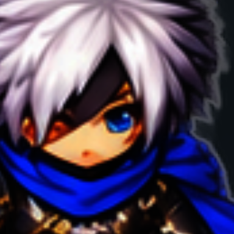
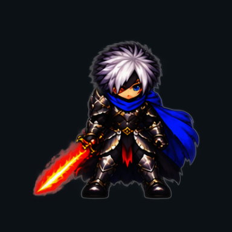

캐릭터 대기 표현 — 실제 GPU 캡처
Unity URP에서 렌더한 384×384 PNG 7장입니다. 원본을 보정·합성하지 않고 그대로 복사했습니다. 버튼 또는 이미지를 누르면 상태가 바뀝니다. 눈 긴장과 시선은 작은 변화이며 완전한 눈 감기는 포함하지 않습니다.
원본 경로·SHA-256 · 42장 시각 검수 범위와 한계
알펜 — 눈매와 시선

alphen-base-face-neutral.png
현재 원본 PNG 열기
제이드 — 안경 안쪽의 눈 긴장
jade-base-face-neutral.png
현재 원본 PNG 열기
알펜 — 발 고정과 상체 움직임

alphen-base-body-neutral.png
현재 원본 PNG 열기